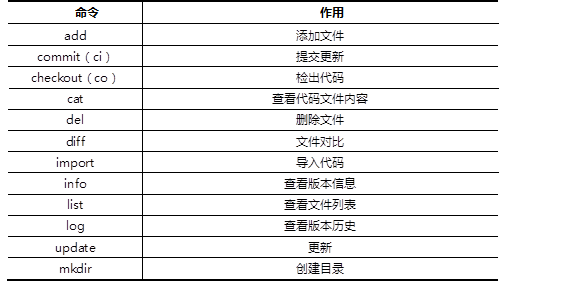
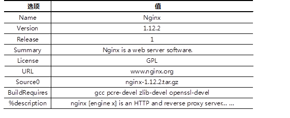

本案例要求先快速搭建好一台Subversion服务器，并测试该版本控制软件：
使用YUM安装subversion软件，使用svn客户端工具连接svnserver服务器并测试版本控制软件。
实现此案例需要按照如下步骤进行。
步骤一：安装Subversion服务器
1）YUM安装subversion软件
- [root@web1 ~]# yum -y install subversion
- [root@web1 ~]# rpm -q subversion
2)创建版本库
- [root@web1 ~]# mkdir /var/svn/
- [root@web1 ~]# svnadmin create /var/svn/project
- [root@web1 ~]# ls /var/svn/project/
- conf/ db/ format hooks/ locks/ README.txt
3）本地导入初始化数据
- [root@web1 ~]# cd /usr/lib/systemd/system/
- [root@web1 ~]# svn import . file:///var/svn/project/ -m "Init Data"
4）修改配置文件，创建账户与密码
所有配置文件，要求顶头写，开头不要有空格。
- [root@web1 ~]# vim /var/svn/project/conf/svnserve.conf
- [general]
- ### These options control access to the repository for unauthenticated
- ### and authenticated users. Valid values are "write", "read",
- ### and "none". The sample settings below are the defaults.
- anon-access = none
- //19行，匿名无任何权限
- auth-access = write
- //20行，有效账户可写
- password-db = passwd
- //27行，密码文件
- authz-db = authz
- //34行，ACL访问控制列表文件
- [root@web1 ~]# vim /var/svn/project/conf/passwd
- … …
- [users]
- harry = 123456
- //用户名和密码
- tom = 123456
- //用户名和密码
- [root@web1 ~]# cat /var/svn/project/conf/authz
- [/] //定义ACL访问控制
- harry = rw //用户对项目根路径可读可写
- tom = rw
5）启动服务
- [root@web1 ~]# svnserve -d -r /var/svn/project
- [root@web1 ~]# netstat -nutlp |grep svnserve
- tcp 0 0 0.0.0.0:3690 0.0.0.0:* LISTEN 4043/svnserve
备注：启动服务也可以使用svnserve -d启动，但客户端访问时需要指定绝对路径（svn://服务器IP/var/svn/project）。
步骤二：客户端测试(192.168.2.200)
1）将服务器上的代码下载到本地
- [root@web2 ~]# cd /tmp
- [root@web2 ~]# svn --username harry --password 123456 \
- co svn://192.168.2.100/ code
- //建立本地副本,从服务器192.168.2.100上co下载代码到本地code目录
- //用户名harry,密码123456
- Store password unencrypted (yes/no)? yes //提示是否保存密码
- [root@web2 ~]# cd /tmp/code
- [root@web2 code]# ls
- [root@web2 code]# vim user.slice //挑选任意文件修改其内容
- [root@web2 code]# svn ci -m "modify user" //将本地修改的数据同步到服务器
- [root@web2 code]# svn update //将服务器上新的数据同步到本地
- [root@web2 code]# svn info svn://192.168.2.100 //查看版本仓库基本信息
- [root@web2 code]# svn log svn://192.168.2.100 //查看版本仓库的日志
- [root@web2 code]# echo "test" > test.sh //本地新建一个文件
- [root@web2 code]# svn ci -m "new file" //提交失败，该文件不被svn管理
- [root@web2 code]# svn add test.sh //将文件或目录加入版本控制
- [root@web2 code]# svn ci -m "new file" //再次提交，成功
- [root@web2 code]# svn mkdir subdir //创建子目录
- [root@web2 code]# svn rm timers.target //使用svn删除文件
- [root@web2 code]# svn ci -m "xxx" //提交一次代码
- [root@web2 code]# vim umount.target //任意修改本地的一个文件
- [root@web2 code]# svn diff //查看所有文件的差异
- [root@web2 code]# svn diff umount.target //仅查看某一个文件的差异
- [root@web2 code]# svn cat svn://192.168.2.100/reboot.target //查看服务器文件的内容
- [root@web2 code]# sed -i 'd' tmp.mount
- //删除文件所有内容，但未提交
- [root@web2 code]# svn revert tmp.mount
- //还原tmp.mount文件
- [root@web2 code]# rm -rf *.target
- //任意删除若干文件
- [root@web2 code]# svn update
- //还原
- [root@web2 code]# sed -i '1a #test###' tuned.service
- //修改本地副本中的代码文件
- [root@web2 code]# svn ci -m "xxx"
- //提交代码
- [root@web2 code]# svn merge -r7:2 tuned.service
- //将文件从版本7还原到版本2
使用svn命令测试svnserver服务时可以使用的命令列表如表-1所示。
表－1 svn命令列表
沿用练习一，通过svn工具，对subversion版本库进行多人协同工作测试，要求如下：
使用svn客户端工具连接subversion服务器并测试多人协同工作以及如何手动解决冲突问题，账户名称分别为harry和tom，最后使用svnadmin dump指令对版本库进行备份工作。
实现此案例需要按照如下步骤进行。
步骤一：多人协同工作
1）远程连接两个终端，每个人下载代码本地副本，注意web1(192.168.2.100)和web2（192.168.2.200）代表了两个不同的主机，看清楚操作是在哪一台计算机上执行！
- [root@web1 ~]# cd /tmp
- [root@web1 ~]# svn --username tom --password 123456 \
- > co svn://192.168.2.100/ code
- [root@web2 ~]# cd /tmp
- [root@web2 ~]# svn --username harry --password 123456 \
- > co svn://192.168.2.100/ code
- [root@web1 ~]# cd code
- [root@web2 ~]# cd code
2) harry和tom修改不同的文件
- [root@web1 mycode]# sed -i "3a ###tom modify#####" tmp.mount
- [root@web1 mycode]# svn ci -m "has modified"
- [root@web2 mycode]# sed -i "3a ###harry modify#####" umount.target
- [root@web2 mycode]# svn ci -m "has modified"
- [root@web2 mycode]# svn update
- [root@web1 mycode]# svn update
3）harry和tom修改相同文件的不同行
- [root@srv5 ~]# cd harry
- [root@web1 mycode]# sed -i "3a ###tom modify#####" user.slice
- [root@web1 mycode]# svn ci -m "modified"
- [root@web2 mycode]# sed -i "6a ###harry modify#####" user.slice
- [root@web2 mycode]# svn ci -m "modified" //提交失败
- Sending svnserve
- Transmitting file data .svn: Commit failed (details follow):
- svn: File '/user.slice' is out of date（过期）
- [root@web2 mycode]# svn update //提示失败后，先更新再提交即可
- [root@web2 mycode]# svn ci -m "modified" //提交成功
- Sending user.slice
- Transmitting file data .
4) harry和tom修改相同文件的相同行
- [root@web1 mycode]# sed -i '1c [UNIT]' tuned.service
- [root@web1 mycode]# svn ci -m "modified"
- [root@web2 mycode]# sed -i '1c [unit]' tuned.service
- [root@web2 mycode]# svn ci -m "modified"
- Sending tuned.service
- Transmitting file data .svn: Commit failed (details follow):
- svn: File '/tuned.service' is out of date(过期)
- [root@web2 mycode]# svn update //出现冲突，需要解决
- Conflict(冲突) discovered in 'tuned.service'.
- Select: (p) postpone, (df) diff-full, (e) edit,
- (mc) mine-conflict, (tc) theirs-conflict,
- (s) show all options:p //选择先标记p，随后解决
- [root@web2 mycode]# ls
- tuned.service tuned.service.mine tuned.service.r10 tuned.service.r9
- [root@web2 mycode]# mv tuned.service.mine tuned.service
- [root@web2 mycode]# rm -rf tuned.service.r10 tuned.service.r9
- [root@web2 mycode]# svn ci -m "modified" //解决冲突
步骤二：使用dump指令备份版本库数据
- [root@web1 ~]# svnadmin dump /var/svn/project > project.bak //备份
- * Dumped revision 0.
- * Dumped revision 1.
- * Dumped revision 2.
- * Dumped revision 3.
- * Dumped revision 4.
- * Dumped revision 5.
- * Dumped revision 6.
- * Dumped revision 7.
- * Dumped revision 8.
- * Dumped revision 9.
- * Dumped revision 10.
- * Dumped revision 11.
- [root@web1 ~]# svnadmin create /var/svn/project2 //新建空仓库
- [root@web1 ~]# svnadmin load /var/svn/project2 < project.bak //还原
步骤三：注册使用Github
1.登陆网站https://github.com，点击Sign up（注册），如图-1所示。
图-1
2.填写注册信息（用户名，邮箱，密码），如图-2所示。
图-2
3. 初始化操作，如图-3和图-4所示。
图-3
图-4
注意，初始化完成后，到邮箱中去激活Github账户。
4. 创建仓库、使用仓库
点击Start a project（如图-5所示），
图-5
填写项目名称（项目名称任意），如图-6所示。
图-6
往仓库中上传文件或新建文件，如图-7所示
图-7
下载仓库中的代码，如图-8所示。
图-8
5. 命令行操作（需要联网的主机，如真实机）
[root@pc001 ~]# yum -y install git
[root@pc001 ~]# git clone https://github.com/账户名称/仓库名称
#clone指令用于将服务器仓库中的资料打包下载到本地
[root@pc001 ~]# cd 仓库名称
[root@pc001 ~]# 任意修改文件，或新建文件
[root@pc001 ~]# git add .
#add添加新文件
[root@pc001 ~]# git commit -m "test"
[root@pc001 ~]# git push
#commit和push实现提交代码的功能
[root@pc001 ~]# git pull
#pull更新，类似于svn update
本案例使用nginx-1.12.2版本的源码软件，生成对应的RPM包软件，具体要求如下：
安装rpm-build软件包，编写SPEC配置文件，创建新的RPM软件包。
配置文件中的描述信息如表-2：
表－2 SPEC描述信息
实现此案例需要按照如下步骤进行。
步骤一：安装rpm-build软件
1）安装rpm-build软件包
- [root@web1 ~]# yum -y install rpm-build
2）生成rpmbuild目录结构
- [root@web1 ~]# rpmbuild -ba nginx.spec //会报错，没有文件或目录
- [root@web1 ~]# ls /root/rpmbuild //自动生成的目录结构
- BUILD BUILDROOT RPMS SOURCES SPECS SRPMS
3）准备工作，将源码软件复制到SOURCES目录
- [root@web1 ~]# cp nginx-1.12.2.tar.gz /root/rpmbuild/SOURCES/
4）创建并修改SPEC配置文件
- [root@web1 ~]# vim /root/rpmbuild/SPECS/nginx.spec
- Name:nginx
- Version:1.12.2
- Release: 10
- Summary: Nginx is a web server software.
- License:GPL
- URL: www.test.com
- Source0:nginx-1.12.2.tar.gz
- #BuildRequires:
- #Requires:
- %description
- nginx [engine x] is an HTTP and reverse proxy server.
- %post
- useradd nginx //非必需操作：安装后脚本(创建账户)
- %prep
- %setup –q //自动解压源码包，并cd进入目录
- %build
- ./configure
- make %{?_smp_mflags}
- %install
- make install DESTDIR=%{buildroot}
- %files
- %doc
- /usr/local/nginx/* //对哪些文件与目录打包
- %changelog
步骤二：使用配置文件创建RPM包
1）安装依赖软件包
- [root@web1 ~]# yum -y install gcc pcre-devel openssl-devel
2）rpmbuild创建RPM软件包
- [root@web1 ~]# rpmbuild -ba /root/rpmbuild/SPECS/nginx.spec
- [root@web1 ~]# ls /root/rpmbuild/RPMS/x86_64/nginx-1.12.2-10.x86_64.rpm
- [root@web1 ~]# rpm -qpi RPMS/x86_64/nginx-1.12.2-10.x86_64.rpm
- Name : nginx Relocations: (not relocatable)
- Version : 1.12.2 Vendor: (none)
- Release : 10 Build Date: Mon 02 May 2016 02:30:53 AM PDT
- Install Date: (not installed) Build Host: localhost
- Group : Applications/Internet Source RPM: nginx-1.8.0-1.src.rpm
- Size : 721243 License: GPL
- Signature : (none)
- URL : www.nginx.org
- Summary : Nginx is a web server software.
- Description :
- nginx [engine x] is an HTTP and reverse proxy server.
- [root@web1 ~]# rpm -qpl nginx-1.12.2-10.x86_64.rpm
- /usr
- /usr/local
- /usr/local/nginx
- /usr/local/nginx/conf
- /usr/local/nginx/conf/fastcgi.conf
- /usr/local/nginx/conf/fastcgi.conf.default
- /usr/local/nginx/conf/fastcgi_params
- /usr/local/nginx/conf/fastcgi_params.default
- /usr/local/nginx/conf/koi-utf
- /usr/local/nginx/conf/koi-win
- /usr/local/nginx/conf/mime.types
- /usr/local/nginx/conf/mime.types.default
- /usr/local/nginx/conf/nginx.conf
- /usr/local/nginx/conf/nginx.conf.default
- /usr/local/nginx/conf/scgi_params
- /usr/local/nginx/conf/scgi_params.default
- /usr/local/nginx/conf/uwsgi_params
- /usr/local/nginx/conf/uwsgi_params.default
- /usr/local/nginx/conf/win-utf
- /usr/local/nginx/html
- /usr/local/nginx/html/50x.html
- /usr/local/nginx/html/index.html
- /usr/local/nginx/logs
- /usr/local/nginx/sbin
- /usr/local/nginx/sbin/nginx
步骤三：安装、卸载软件
- [root@web1 ~]# rpm -ivh RPMS/x86_64/nginx-1.12.2-10.x86_64.rpm
- [root@web1 ~]# rpm -qa |grep nginx
- [root@web1 ~]# /usr/local/nginx/sbin/nginx
- [root@web1 ~]# curl http://127.0.0.1/